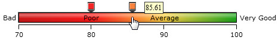
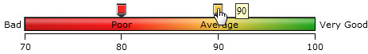
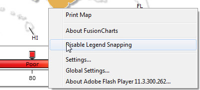
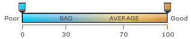
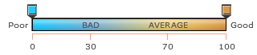
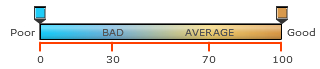
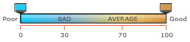
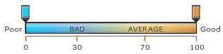

Gradient legend is a pane of blended colors derived from the <colorRange> definitions. A linear scale is drawn with two drag-able pointers. Each color defined for a numeric range blends with the next color, thus forming a gradient strip. Each point on the gradient scale represents a unique color and value. So, entities with different values will appear in unique colors as per the position of the value on the gradient scale. A map with gradient legend will look as under:

The data for the above displayed gradient legend is given below:
<map ...>
<colorRange gradient="1" minValue="70" code="CC0001" startlabel="Bad" endLabel="Very Good">
<color maxValue="80" displayValue="Poor" code="FF0000" />
<color maxValue="90" displayValue="Average" code="FFCC33" />
<color maxValue="100" code="069F06" />
</colorRange>
<data>
...
</data>
</map>
{
"map": {
...
},
"colorrange": {
"gradient": "1",
"minvalue": "70",
"code": "CC0001",
"startlabel": "Bad",
"endlabel": "Very Good",
"color": [
{
"maxvalue": "80",
"displayvalue": "Poor",
"code": "FF0000"
},
{
"maxvalue": "90",
"displayvalue": "Average",
"code": "FFCC33"
},
{
"maxvalue": "100",
"code": "069F06"
}
]
},
"data": [
...
]
}In the above data, the attributes used to define the numeric range and to set the colors are:
- gradient attribute in the <colorRange> element is set to '1' to show gradient legend
- minValue and maxValue attribute in the <colorRange> element attribute is used to set the upper limits and the intervals in the gradient scale of each numeric range through the <color> elements
- code attribute in the <colorRange> element is used to specify the color at the beginning of the gradient scale. The same attribute is used to set the colors for each numeric range through the <color> elements
In the <colorRange> element we are defining the start value of the numeric range or the gradient scale as '70'. The starting color for the gradient scale is set as CC0001.
In the first <color> element, the code attribute is used to define the second color in the gradient scale which blends with the first and the third color. The color applied is FF0000. The maxValue attribute is used to set the upper limit of the first numeric range. So, any number greater than or equals to 70 and less than 80 will appear in the colors having a blend of deep red and light red. The blending will depend on the numeric value and its position on the gradient scale.
In the second <color> element, the upper limit is set to '90' and '80' becomes the lower limit for the second numeric range. The color defined for the range is FFCC33.
In the last <color> element, the upper limit of the gradient scale and the last numeric range is set to '100' and '90' becomes the lower limit. The color set for the range is 069F06.
The table below shows the equation of the above explanation:
| Numeric Range | Label | Color Hex code |
| 70 <= value <80 | Bad | CC0001 (Red) |
| 80 <= value <90 | Average | FFCC33 (Yellow) |
| 90 <= value <= 100 | Good | 069F06 (Green) |
The gradient scale shows a tick mark with labels for each upper and lower limit. The labels for the upper and lower limit of the gradient scale are set using the startLabel and endLabel attributes in the <colorRange> element. The labels for the numeric ranges are set using the label attribute through the <color> elements. The label for the last numeric range is taken from the endLabel attribute.
You can also customize the gradient legend as per your requirement. For example, a single color gradient legend can also be used. The XML data is shown below:
In this instance, only one color is used to draw the gradient scale. So, the scale will appear in the darkest shade of the color (lower limit) to the brightest shade of the color (upper limit). In this example, the map will automatically decide the numeric range taking the lowest data value present as the lower limit and the highest data value as the upper limit. There is no scope of setting the upper limit using the maxValue attribute but you can use the minValue attribute in the <colorRange> element to set the lower limit of the numeric range. The legend will look like as under:
Hide or Show data values
Gradient legend is highly interactive and allows you to show a certain range of numbers and hide rest of the data plots or cell. Click and hold the cursor on any of the scale pointers and drag it to a particular point on the scale to set the numeric range that is to be shown. For example, in a numeric range 0-100, you may want to show the numbers between 80 and 90. To do this, click on the lower limit pointer and drag it to 80 and release. Then, click on the upper limit pointer and drag it to 90 and release. The map will only display the entities residing in the range between 80 and 90. The rest of the entities will hide. A map (with hidden entities) using the interactive legend is shown below:
Snap to tick
Important: This feature is not supported in JavaScript maps.
All the lower and upper limits in the gradient scale are marked with ticks. Sometime, it gets very difficult to place the pointers exactly on the ticks. The map allows you to "Snap to tick" for gradient legend to ease the process. "Snap to tick" allows the pointer to get placed automatically on the tick if it is released on a position close to the tick. For example, a pointer will automatically get placed on the tick mark of the position 90 if it is released on 90.42 or 89.78. To turn this feature off, you can set the snapLegendPointers attribute to '0' or right click on the map and click on "Disable legend snapping". You can also set the snapping range of the pointers by using the legendSnapRange attribute. The value of this attribute is calculated in percentage with respect to the total numeric range. The maximum value that can be used for the attribute is 5.
Let us see an example of how to set the snapping range of the legend pointers. The data is show below:
In the above data, the attribute legendSnapRange is set to '5'. The numeric range defined in the <colorRange> element is 70-100. Hence, the snapping range of the gradient pointers is 5. In the images below we are snapping the upper limit pointer on the tick mark of 90. The first image shows that the pointer is released on 85.61. The second image shows that the pointer is snapped on the tick mark of 80.
|  |  |
To disable this feature right click on the map and select "Disable Legend Snapping".
You can also disable this feature from the XML/JSON data by using the snapLegendPointers attribute. The data is shown below:
Cosmetics properties of Gradient Legend can be set in the <map> element of XML data (or map object in JSON data). The related properties are discussed below:
| Attribute Name | Type/Range | Description | Screenshot |
| LegendScaleLinecolor | Hex Code | Sets the color for the gradient scale. In the image beside, the color is set to FF3F00 (Orange). |  |
| LegendScaleAlpha | 0-100 | Sets the transparency of the gradient scale. In the image beside, the alpha is set to '50'. |  |
| LegendScaleLineThickness | Numeric value | Sets the thickness of the gradient scale. In the image beside, the thickness is set to 2. |  |
| LegendPointerWidth | Numeric Value | Sets the width of the gradient pointers. The width is set to '20' in the image beside. |  |
| LegendPointerHeight | Numeric Value | Sets the height of the gradient pointers. The height is set to '25' in the image beside. |  |